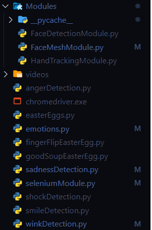

iCare is a python application which makes use of your webcam in order to detect the emotion on your face. iCare uses modules from MediaPipe and OpenCV. Detection of emotions is done mathematically by calculating difference between various specific points for each emotion. iCare is quite in it's intial development and is a unique idea by two university students in Turkey - Waasiq Masood and Eyup Barlas. The module will contain a lot of improvements in upcoming versions. More is explained in the working of the program.
Table of contents
iCare combines the modules of OpenCV and MediPipe together. The working of camera
is controlled by OpenCV while the detection of facial landmarks is done using MediaPipe.
We are capturing the specific points of the facemesh and then calculating the change between those
points in order to understand which emotion is being shown on the screen.
Ofcourse the capture is not point perfect the main reason it being is we were testing on laptop webcams.
To capture the micro emotions of the human facial expression, high HD cameras are required. The other
problem which we encountered was that while happiness may be seen on face easily sadness and anger has
microexpressions on the face which is quite hard to calculate mathematically.
We have coded three main modules which are then used in the program. FaceDetectionModule.py detects the face of a human and gives a success percentage. This module was implemented in the older versions of our program but was replaced with more complex Facemesh module. Facemesh module is explained in the facemesh module.
Although all the emotions have been combined in iCareProducts/emotions.py. The emotion file uses the landmark detection of the respective emotion file. It imports the function 'emotion'Points function from the respective emotion file which returns us a left and right hypotenus value. The data is evaluated in realtime and the emotion is calculated then. FacemeshDetection function from Facemesh module is also used in the emotions module.
OpenCV is being used to control the video part of the application. We use the Facemesh to capture the face of the person. More information on OpenCV and Facemesh can be found in the documentations of OpenCV and Mediapipe.
Facemesh contains about 450+ landmarks on the face. Each of the landmark can be represented a digit value. Below is the image and link
attached to get the specific landmarks of the face. For every emotion we have captured two different landmarks on each side of face which is explained
in the capturing emotions part.
Detecting emotions has been done by calculating the changes in hypotenus when the face is in a specific position.
The specific box has been put in order to calculate the differences from a exact point else capturing the Z axis
is quite a hard thing. Below is the given example of a person inside a box and outside the box:
Useful links: Face mesh Landmark Facial expressions video
404 Under Construction